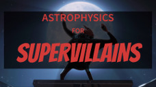
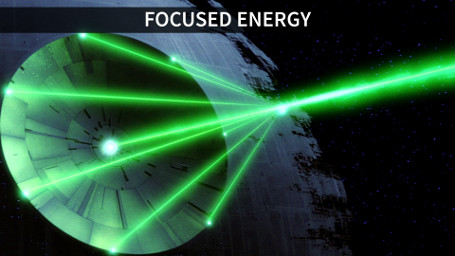
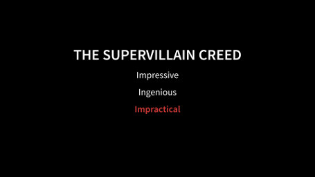

Astrophysics for Supervillains
March 19, 2016

This talk was designed for the IoA Open Day held on March 19 2016. I got to dress up in a menacing cloak, perfect my evil laugh, and teach a class of budding supervillains (a.k.a. the audience) about the darkest, twistiest, most powerful bits of astrophysics—as well as how they could be used for nefarious purposes. The talk was a massive hit, with the entire lecture theatre packed out and people being turned away at the door. All in all, I am extremely pleased with how fun this talk was to prepare and how positive the audience reaction was.
At this stage I am not putting the entire thing online, as there were several large animations that chew up space, but here are a couple of snapshots of my favourite slides:
Visual explanations make everything clearer, especially when the subject is “how to destroy the Earth”.

We discussed how the inverse-square law dilutes energy in space. I also strongly advised against the use of a spaceship-mounted laser. Although it may seem like a good idea at the time, your spaceship will inevitably become the target for every rebel alliance in the galaxy.

Finally, never forget the Supervillain Creed. Your plans must be three things:
- impressive: no supervillain worth their salt would dream of attempting anything less than world domination or something of a similar scale!
- ingenious: you will be up against the toughest superheroes in the world, and consequently you must be prepared with the most dastardly of schemes!
- completely and utterly impractical: your plans must be nearly impossible to pull off. After all, you are inevitably going to fail.